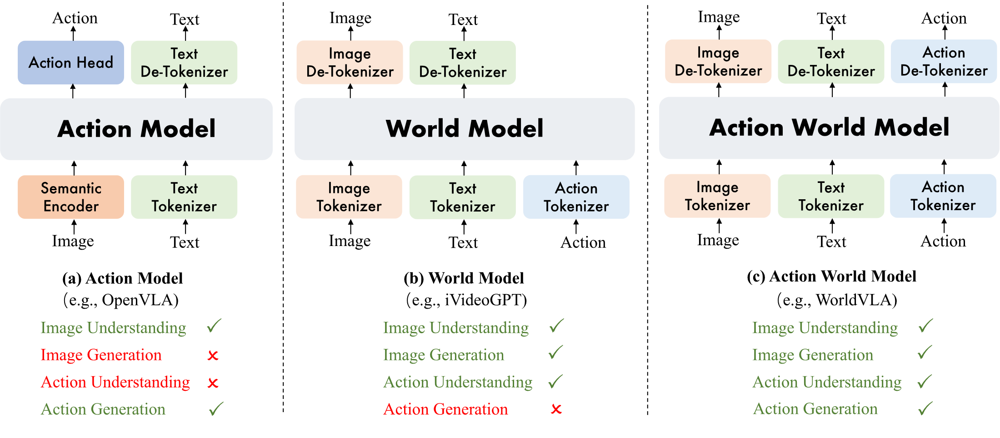
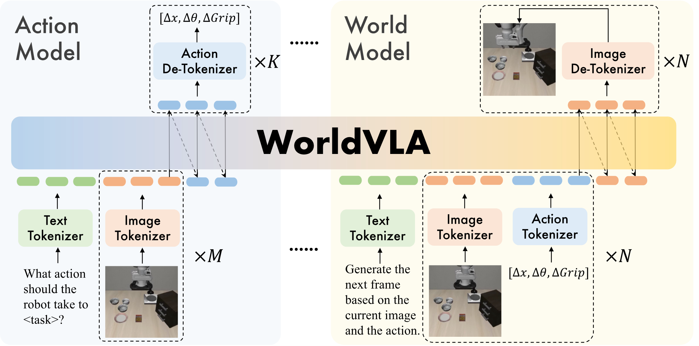
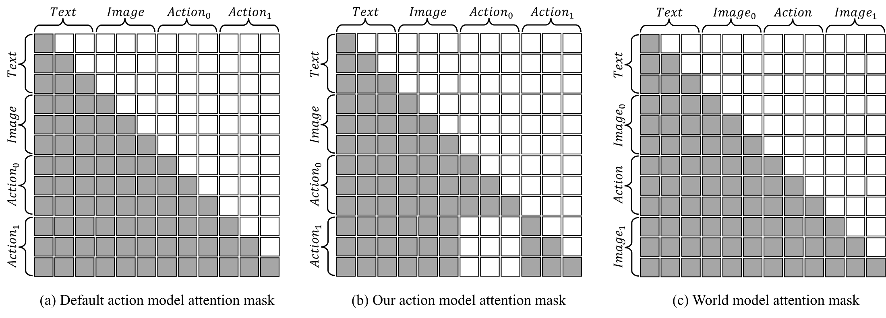
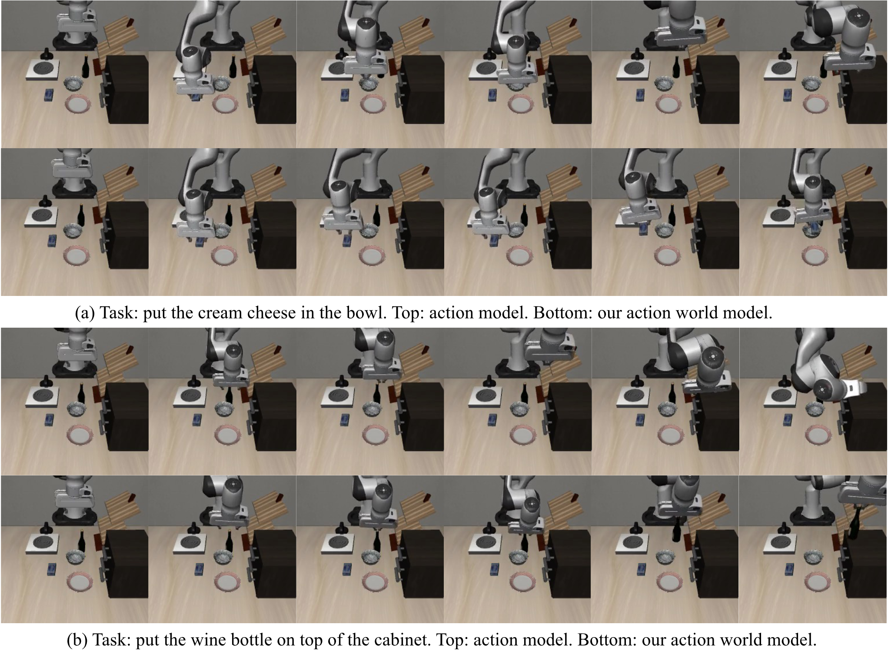
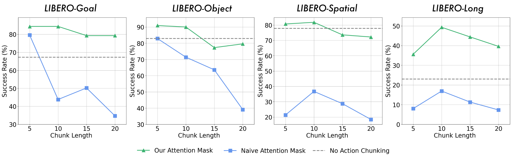
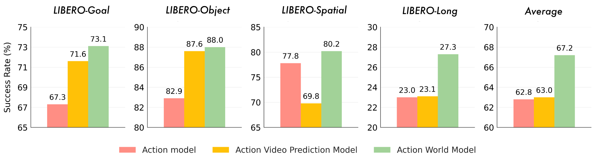

WorldVLA: Towards Autoregressive Action World Model
1. 论文速览
| 论文要解决什么 | 现有 VLA 模型通常只把 action 当输出，缺少把 action 当输入来理解环境动态的能力；world model 能根据 action 预测未来视觉状态，但不能直接输出机器人动作。WorldVLA 试图统一这两类功能。 |
|---|---|
| 作者的方法抓手 | 把文本、图像和 7 维机器人动作都离散成 token，在一个 autoregressive LLM 中混合训练 action loss 与 world loss；并为 action chunk generation 设计只看文本和图像、不看先前 action token 的 attention mask。 |
| 最重要的结果 | 在 LIBERO 上，WorldVLA 512×512 无大规模机器人预训练时达到 81.8% 平均成功率，高于 OpenVLA 的 76.5%；action-world 联合训练相较单独 action model 平均 SR 从 62.8% 提到 67.2%，在带 action chunk 与新 mask 时从 76.6% 提到 78.1%。 |
| 阅读时要注意的点 | 论文没有附录，很多实现超参只在正文给出；表格中的 “WorldVLA” 有时指 action-world 联合训练，有时指 256/512 分辨率模型，需要结合表格列头区分。 |
关键词
Vision-Language-Action World Model Autoregressive Modeling Action Chunking LIBERO
核心贡献
- 统一 action 与 image 的理解和生成。论文提出 WorldVLA，把 action model 与 world model 合成同一个自回归 action-world model。
- 指出离散自回归 action chunk 的误差传播问题。作者观察到普通 causal mask 下，后续动作会依赖前面已经生成的动作 token，前面错了会继续带偏后面。
- 提出 action attention mask。生成当前 action 时屏蔽历史 action token，让每个 action 主要由文本和视觉输入决定，从而减少 action chunk 长度增加时的性能下降。
- 实验证明双向增强。world model 训练改善 action success rate，action model 训练也改善长视频预测质量，尤其 50-frame FVD 从 718.6 降至 674.1。
2. 动机与相关工作
2.1 要解决的问题
论文把机器人模型分成两个互补但不完整的能力：VLA/action model 根据图像和语言输出动作，world model 根据当前视觉状态和动作预测未来视觉状态。前者能执行任务，但 action 多被看作最终输出；后者能建模动作导致的环境变化，却不能直接给出控制策略。
WorldVLA 的动机是：如果一个模型既要生成动作，又要根据动作想象下一帧，那么它在训练中会被迫同时学习视觉语义、动作语义和物理转移关系。作者将这称为 action model 与 world model 的 mutual enhancement。

2.2 相关工作脉络
| 技术线 | 代表方法 | 论文中的定位 | WorldVLA 的差异 |
|---|---|---|---|
| Vision-Language-Action Model | RT-1/RT-2, OpenVLA, $\pi_0$, diffusion VLA | 用 MLLM 或视觉 backbone 加 action head，把观测和指令映射到动作。 | 不仅预测 action，还把 action 作为输入去训练下一帧预测，使模型学习 action-conditioned dynamics。 |
| Video / World Model | MAGVIT, SVD, Cosmos, iVideoGPT, DWS | 视频生成可用于“想象未来”；world model 进一步用 action 控制未来状态。 | WorldVLA 同时保留 world prediction 与 action output，而不是只生成视频或只做策略选择。 |
| Unified Understanding and Generation | Chameleon, Emu3, Transfusion, Janus, UVA | 把理解与生成统一到同一模型或同一系统内。 | WorldVLA 选择离散 token + 自回归 LLM 路线；UVA 作为 action-world 方向的连续 diffusion head 对照。 |
2.3 方法类型对比表
| Model Type | Discrete | Continuous | Input | Output |
|---|---|---|---|---|
| Action Model | OpenVLA | $\pi_0$ | T + V | A |
| Video Prediction Model | MAGVIT | SVD | T + V | V |
| World Model | iVideoGPT | DWS | T + V + A | V |
| Action World Model | WorldVLA | UVA | T + V + A | V + A |
3. 方法详解
3.1 总体架构
WorldVLA 初始化自 Chameleon，因为 Chameleon 本身就是图像理解和图像生成统一的离散 token 模型。论文在此基础上加入三类 tokenizer：image tokenizer、text tokenizer、action tokenizer。所有模态最终都进入同一个 autoregressive token 序列。

| 组件 | 论文给出的设置 | 作用 |
|---|---|---|
| Image tokenizer | VQ-GAN；压缩率 16；codebook size 8192；256×256 图像生成 256 tokens，512×512 图像生成 1024 tokens。 | 把图像离散化，使 LLM 能像生成文本 token 一样生成图像 token。 |
| Text tokenizer | BPE tokenizer；词表大小 65,536，其中包含 8192 image tokens 和 256 action tokens。 | 统一文本、图像、动作 token 的词表入口。 |
| Action tokenizer | 每个连续动作维度离散到 256 个 bin；一个动作表示为 7 个 token：3 个相对位置、3 个相对角度、1 个绝对夹爪状态。 | 把机器人控制量变成可由自回归模型预测的离散 token。 |
3.2 Action Model Data
action model 的任务是根据语言指令和图像观测生成动作。论文使用的文本 prompt 形式是：
序列形式为：
这里 $M$ 是输入历史图像数量，$K$ 是一次输出的 action chunk 长度。训练时只计算 action token 上的交叉熵损失 $\mathcal{L}_{action}$。
3.3 World Model Data
world model 的任务是根据当前图像和当前动作生成下一帧。论文强调它不需要 task instruction，因为给定 action 后，下一状态主要由当前状态和 action 决定。使用的文本 prompt 是：
$N$ 表示连续预测下一帧的轮数；论文默认为了节省计算设为 $N=1$。训练时只计算生成图像 token 的 loss。
3.4 Action Attention Mask
普通自回归 causal mask 允许当前 token 看见所有过去 token。对文本和图像生成来说这很自然，但对 action chunk 来说会产生一个问题：后续 action token 会依赖前面预测出来的 action token。由于基础 MLLM 主要在文本和图像上预训练，action 模态泛化不如文本图像强，前面动作一旦预测错，错误会在 chunk 内传播。
作者提出的 mask 策略是：生成当前 action 时只允许看文本和图像输入，不允许看先前 action。这样 $K$ 个 action 在语义上更接近并行预测，每个动作都直接由视觉观测决定。

3.5 前向过程伪代码
4. 数学形式与训练目标
4.1 Problem Formulation
Action model 在回答：给定历史观测和语言指令，当前应该执行什么动作。
$$a_t = \pi_\theta(a_t \mid o_{t-h:t}, l)$$| $a_t$ | 时刻 $t$ 的机器人动作。 |
| $o_{t-h:t}$ | 从 $t-h$ 到 $t$ 的历史图像观测。 |
| $l$ | 自然语言任务指令。 |
| $\pi_\theta$ | 策略模型，也就是 action model。 |
World model 在回答：给定过去观测和过去动作，下一帧会是什么样。
$$o_t = f_\phi(o_t \mid o_{t-h:t-1}, a_{t-h:t-1})$$| $f_\phi$ | world model。 |
| $o_{t-h:t-1}$ | 当前帧之前的图像观测序列。 |
| $a_{t-h:t-1}$ | 对应的历史动作序列。 |
WorldVLA 把两种能力放进同一个参数化模型 $M_\psi$。
$$M_\psi: \begin{cases} a_t = M_\psi^{\text{policy}}(a_t \mid o_{t-h:t}, l), \\ o_t = M_\psi^{\text{world}}(o_t \mid o_{t-h:t-1}, a_{t-h:t-1}). \end{cases}$$这不是两个完全分离的模型，而是共享一个 autoregressive token backbone；区别主要来自输入序列格式、loss 位置和 attention mask。
4.2 Joint Loss
| $\mathcal{L}_{action}$ | action token 上的 cross-entropy loss。 |
| $\mathcal{L}_{world}$ | generated image token 上的 cross-entropy loss。 |
| $\alpha$ | world loss 权重，论文实验中固定为 0.04。 |
使用 $\alpha$ 的原因很实际：一个 action 只有 7 个 token，而图像有 256 或 1024 个 token；若不加权，world loss 的 token 数量会显著主导总损失。
5. 实验与结果
5.1 实验设置
| 项目 | 设置 |
|---|---|
| Benchmark | LIBERO，包括 LIBERO-Spatial、Object、Goal、Long、LIBERO-90。Spatial 测空间关系，Object 测物体识别和抓取放置，Goal 测不同目标过程，Long 包含 10 个长程任务，LIBERO-90 用于预训练。 |
| 数据处理 | 过滤失败轨迹和 no-operation actions；world model 评估需要成对 video/action ground truth，因此 90% trajectory 作为训练集，10% 作为验证集。Table 3 的 benchmark comparison 为公平使用所有可用数据训练。 |
| 默认超参 | action model 默认输入图像数 $M=2$；LIBERO Long 的 action chunk size $K=10$，其余三个任务 $K=5$；world model 默认 $N=1$；$\alpha=0.04$。 |
| Action metrics | 每个任务 50 次 rollout，记录 success rate，单位为百分比。 |
| World metrics | 在验证集上记录 FVD、PSNR、SSIM、LPIPS。 |
5.2 主 benchmark 结果
| Continuous Action Model | Pretraining | Spatial | Object | Goal | Long | Average |
|---|---|---|---|---|---|---|
| Diffusion Policy | No | 78.3 | 92.5 | 68.3 | 50.5 | 72.4 |
| Octo | Yes | 78.9 | 85.7 | 84.6 | 51.1 | 75.1 |
| DiT Policy | Yes | 84.2 | 96.3 | 85.4 | 63.8 | 82.4 |
| OpenVLA-OFT | Yes | 96.9 | 98.1 | 95.5 | 91.1 | 95.4 |
| Discrete Action Model | Pretraining | Spatial | Object | Goal | Long | Average |
| OpenVLA | Yes | 84.7 | 88.4 | 79.2 | 53.7 | 76.5 |
| WorldVLA 256×256 | No | 85.6 | 89.0 | 82.6 | 59.0 | 79.1 |
| WorldVLA 512×512 | No | 87.6 | 96.2 | 83.4 | 60.0 | 81.8 |
作者的解读是：WorldVLA 在没有大规模机器人预训练的条件下已经超过离散 OpenVLA。512×512 优于 256×256，一方面因为 Chameleon 的 image tokenizer 和 LLM 组件更贴近 512×512 预训练设置，另一方面高分辨率提供更细致的视觉信息，对抓取任务重要。
5.3 World Model 对 Action Model 的帮助
| Index | Action Model | World Model | Action Chunking | New Mask | Goal | Object | Spatial | Long | Average |
|---|---|---|---|---|---|---|---|---|---|
| 1 | Yes | No | No | No | 67.3 | 82.9 | 77.8 | 23.0 | 62.8 |
| 2 | Yes | Yes | No | No | 73.1 | 88.0 | 80.2 | 27.3 | 67.2 |
| 3 | Yes | No | Yes | No | 79.6 | 82.9 | 36.7 | 16.9 | 54.0 |
| 4 | Yes | No | Yes | Yes | 84.4 | 90.9 | 81.8 | 49.3 | 76.6 |
| 5 | Yes | Yes | Yes | Yes | 85.1 | 90.9 | 84.0 | 52.4 | 78.1 |
Row 2 相比 Row 1 平均成功率从 62.8 提到 67.2；Row 5 相比 Row 4 从 76.6 提到 78.1。论文解释为：world model 需要学习动作导致的状态变化，因此会让共享 backbone 更理解环境物理和动作含义，从而对 action model 有益。

5.4 Action Model 对 World Model 的帮助
| 10 frames | 50 frames | |||||||
|---|---|---|---|---|---|---|---|---|
| Model | FVD ↓ | PSNR ↑ | SSIM ↑ | LPIPS ↓ | FVD ↓ | PSNR ↑ | SSIM ↑ | LPIPS ↓ |
| World Model | 250.0 | 29.62 | 90.73 | 11.97 | 718.6 | 23.98 | 83.41 | 15.60 |
| Action World Model | 255.1 | 29.77 | 90.40 | 11.94 | 674.1 | 24.30 | 83.55 | 15.44 |
10-frame 上两者接近，pure world model 的 FVD 与 SSIM 略好；50-frame 上 action world model 在四个指标上全部更好。作者据此强调：action generation 训练也能强化视觉和行为模式理解，尤其对较长序列生成更明显。

5.5 Action Chunking 与 Attention Mask
论文观察到，普通自回归方式生成多个连续动作时，action chunk 越长，性能越容易下降。原因是后续动作过度依赖前面已生成动作，而不是直接扎根于视觉输入。新 mask 让每个 action 只依赖文本和图像，避免 chunk 内错误传播。

5.6 World Model vs. Video Prediction Model
video prediction model 的输入是当前帧和 task instruction，不含 action；world model 的输入包含 action。作者比较两者对 action model 的帮助，发现 world model 对所有评估任务都有提升，而 video prediction model 只在两个任务上有帮助、一个任务上有负面影响。论文给出的解释是：没有 action 条件时，同一初始帧可能对应多个合理未来帧，训练信号更模糊；action-conditioned world model 的未来状态更确定。

5.7 历史图像输入长度
| 1 frame | 2 frames | 4 frames | ||||
|---|---|---|---|---|---|---|
| Setting | SR ↑ | FPS ↑ | SR ↑ | FPS ↑ | SR ↑ | FPS ↑ |
| w/o Action Chunking | 58.4 | 2.27 | 67.3 | 1.77 | 78.7 | 1.22 |
| w/ Action Chunking | 74.0 | 3.67 | 84.4 | 3.13 | 84.7 | 2.78 |
历史帧越多，模型获得的视觉上下文越强，但 FPS 下降。带 action chunking 时，2 帧到 4 帧的 SR 只从 84.4 到 84.7，作者因此默认采用 $M=2$，作为性能和速度折中。
5.8 World Model Pretraining
| Setting | Goal | Object | Spatial | Long | Average |
|---|---|---|---|---|---|
| w/o World Model Pretrain | 67.3 | 82.9 | 77.8 | 23.0 | 62.8 |
| w/ World Model Pretrain | 73.1 | 84.0 | 79.8 | 30.2 | 66.8 |
world model pretraining 后平均 SR 从 62.8 到 66.8，Long 从 23.0 到 30.2。作者将其解释为：world model 预训练迫使模型先学习视觉输入、动作以及状态转移物理，再迁移到 action model。
6. 复现审计
6.1 代码与模型
可用信息：arXiv 页面和源码都给出 GitHub 链接 alibaba-damo-academy/WorldVLA。当前该链接会重定向到 RynnVLA-002，README 显示 2025-11-10 将 WorldVLA 升级为 RynnVLA-002，并在 2025-06-23 发布过 WorldVLA 的模型、训练代码和 LIBERO 评测代码。Hugging Face 上仍有 WorldVLA model card，列出了 256 和 512 分辨率 checkpoint。
6.2 数据与预处理
- 使用 LIBERO benchmark，主要评估 Spatial、Object、Goal、Long，并使用 LIBERO-90 作为预训练相关数据来源。
- 过滤 unsuccessful trajectories 和 no-op actions，处理方式参照 OpenVLA。
- world model 评估需要 ground-truth paired video/action data，因此训练/验证按 90%/10% 轨迹划分。
- Table 3 的主 benchmark comparison 使用所有可用数据训练，以便和前作对比。
6.3 训练关键超参
| 超参 | 值 | 备注 |
|---|---|---|
| Backbone initialization | Chameleon | 统一图像理解和生成的离散自回归模型。 |
| Image resolution | 256×256 或 512×512 | 512×512 图像对应 1024 image tokens，性能更高但代价更大。 |
| Image tokenizer codebook | 8192 | VQ-GAN tokenizer。 |
| Text tokenizer vocabulary | 65,536 | 包含 image/action token。 |
| Action bins | 每个维度 256 bins | 由训练数据范围决定 bin width。 |
| Action dimension | 7 tokens | 3 relative positions + 3 relative angles + 1 gripper state。 |
| Historical images $M$ | 默认 2 | 由历史帧消融确定。 |
| Action chunk $K$ | Long 为 10，其余为 5 | 默认配置。 |
| World prediction rounds $N$ | 1 | 为节省计算。 |
| Loss weight $\alpha$ | 0.04 | 平衡 image token 数量远多于 action token 的问题。 |
6.4 复现缺口
- 训练资源未在论文正文说明。GPU 类型、数量、训练时长、batch size、optimizer、learning rate schedule 等不在 LaTeX 正文中。
- 没有附录。源码中 appendix 输入被注释，未提供更完整的超参表或实现细节补充。
- 代码仓库已经升级。论文给出的 WorldVLA GitHub 链接当前重定向到 RynnVLA-002；若严格复现论文表格，需要确认仓库是否保留原 WorldVLA 版本或对应 tag/commit。
7. 分析、局限与边界
7.1 这篇论文最有价值的地方
从论文自身证据看，价值集中在两个相互连接的结论：第一，world model 训练能改善 action generation；第二，action model 训练也能改善较长 horizon 的 world prediction。这个结论不是只靠概念图支撑，而是分别由 action ablation 表、world model ablation 表和可视化案例给出支持。
7.2 结果为什么站得住
论文的主张有三类证据互相对齐：主 benchmark 显示 WorldVLA 在离散 action model 组超过 OpenVLA；ablation 明确拆分 action model、world model、action chunking、attention mask 的影响；可视化图展示了纯 action model 和纯 world model 的典型失败模式。尤其 Table 4 的 Row 3 与 Row 4 直接说明 naive autoregressive action chunk 会大幅退化，而新 mask 能恢复性能。
7.3 作者自述的局限与未来方向
- 数据和模型规模仍可扩展。Conclusion 中明确把 scaling data and model size 作为后续方向。
- 离散 image tokenizer 的视觉表达能力有限。作者指出当前 tokenizer 依赖离散表征，perceptual expressiveness 受限，需要更统一、更高质量的 tokenizer。
- 可以加入辅助 action head。作者认为 auxiliary action head 可能进一步提升 grasping performance。
7.4 适用边界
论文的实验证据主要来自 LIBERO 仿真 benchmark；模型是否能直接迁移到真实机器人、更多硬件动作空间、更长任务链条和更复杂交互环境，正文没有给出实验验证。报告中关于泛化的结论因此只限于论文已评估的 LIBERO 设置。
7.5 附录状态
本 arXiv 源码未包含可用附录：`paper.tex` 中 `\beginappendix` 与 `\input{sec/appendix}` 均被注释，源码目录也没有 `sec/appendix.tex`。因此本报告没有可整合的附录证明、附录超参或附录补充实验。